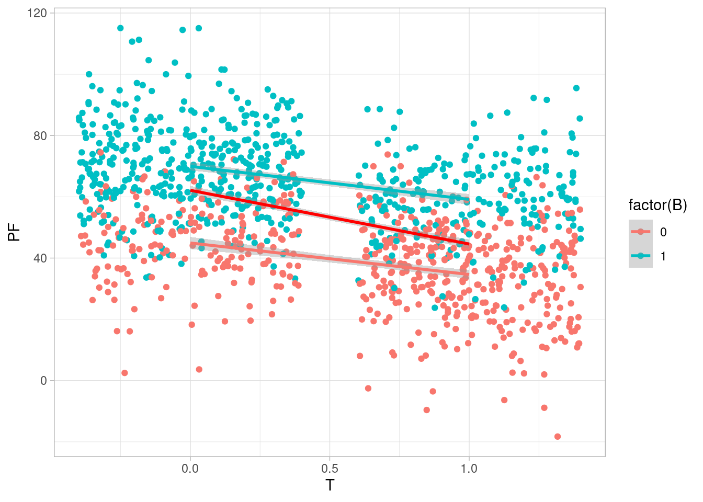

Código
library(tidyverse)
library(kableExtra)
library(DiagrammeR)
ggplot2::theme_set(ggplot2::theme_light())
inv_logit <- \(x) 1 / (1 + exp(-x)) library(tidyverse)
library(kableExtra)
library(DiagrammeR)
ggplot2::theme_set(ggplot2::theme_light())
inv_logit <- \(x) 1 / (1 + exp(-x)) En esta parte veremos qué nos aporta hacer explícitas los supuestos causales en el caso de experimentos, donde tenemos control sobre la asignación de tratamientos. En los experimentos clásicos, intentamos obtener datos de un proceso generador especial:
Por ejemplo, si queremos podemos asignar tratamiento de aspirina o no aspirina a una persona, lo hacemos por ejemplo viendo el dígito de unidades en su fecha de nacimiento. Aunque no tiramos ninguna moneda, este dígito no tiene ninguna relación con las maneras en que el tratamiento puede ayudar a reducir el dolor de cabeza.
Entonces podríamos tener un diagrama como el que sigue, donde queremos estimar el efecto causal de \(T\) sobre \(Y\):
grViz("
digraph {
graph [ranksep = 0.2, rankdir = LR]
node [shape=plaintext]
edge [minlen = 3]
Dia -> T
T -> Y
X -> Z
W -> Z
Y -> W
Y -> Z
A -> Y
T -> A
X -> W
T -> X
S -> Y
#{ rank = same; A; D }
}
")La variable \(Dia\) que determina el tratamiento no tiene aristas en común con ningún otro nodo de nuestro modelo causal, así que para tener una estimación del efecto total en este experimento, no es necesario aplicar ningún ajuste, no importa lo complicada que sea esta gráfica, y podemos usar simplemente \(p(y|t)\). No hay necesidad de estratificar por ninguna variable. No es un modelo “mecanístico”, ni nos sirve para aprender otras cosas, pero sabemos que da una estrategia de identificación para el efecto causal que nos interesa. A partir de nuestra estimación de esta condicional podemos resumir para obtener el efecto causal de interés. Por ejemplo, si el tratamiento toma valores \(T=0\) o \(T=1\), podemos considerar la diferencia de medias condicionales.
Sin embargo, dependiendo de la gráfica
Resumiendo:
Consideraremos los diagramas de Cinelli, Forney, y Pearl que se refieren a una situación experimental.
Consideramos el siguiente diagrama: en este caso, \(Z\) causa variación en \(Y\). Controlar por \(Y\) puede mejorar la precisión de nuestras estimaciones causales, sin abrir ningún camino no causal (Modelo 8 en Cinelli, Forney, y Pearl, A Crash Course in Good and Bad Controls) :
grViz('
digraph {
graph [ranksep = 0.2, rankdir = LR]
subgraph caso_1 {
node [shape=plaintext]
Z [fontcolor="red"]
edge [minlen = 3]
Z -> Y
T -> Y
}
}
', width = 250, height = 60)Queremos probar un tratamiento para reducir peso. Aleatorizaremos las personas al tratamiento (por ejemplo una medicina), y antes de comenzar el estudio registramos su peso inicial y estatura. Nuestro diagrama es el siguiente, donde incluímos también el peso inicial que influye en el peso final después del tratamiento, y otras variables no observadas que influyen tanto en peso final como peso inicial (por ejemplo, si las personas estuvieron haciendo alguna dietas o no). También medimos una cantidad, al final del experimento, que es bienestar general de la persona (o una calificación de su estado de salud general). Adicionalmente medimos una variable \(C\) (cansancio), pues sabemos que esta medicina puede tener ese efecto. El cansancio puede afectar el peso final pues los niveles de actividad pueden cambiar. \(B\) puede ser en este caso una medición de circunferencia de abdomen, por ejemplo.
grViz("
digraph {
graph [ranksep = 0.2, rankdir=LR]
node[shape=circle]
U
V
node [shape=plaintext]
T
edge [minlen = 3]
#G -> H
#H -> PI
T -> PF
#G -> PF
PI -> PF
U -> PI
U -> PF
V -> PF
T -> C -> PF
PF -> B
}
")No hay ninguna variable confusora, y una estrategia de estimación es comparar \(PF\) entre los grupos.
sim_peso <- function(n){
T <- rbinom(n, 1, 0.5)
C <- rbinom(n, 1, 1/(1+exp(-(-2 + 4 * T))))
U <- rnorm(n, 0, 5)
G <- rbinom(n, 1, 0.5)
H <- rnorm(n, 170 - 10 * G, 20)
PI <- rnorm(n, -20 + 0.5 * H + U, 10)
PF <- rnorm(n, PI + U - 20 * T + 3 * C , 5)
#V <- PF - (PI + U - 10 * T + 2 * C)
B <- rbinom(n, 1, 1/(1 + exp(-(PF-50)/7)))
tibble(G, H, T, PI, PF, B, C)
}
set.seed(26)
peso_tbl <- sim_peso(1200)
peso_tbl# A tibble: 1,200 × 7
G H T PI PF B C
<int> <dbl> <int> <dbl> <dbl> <int> <int>
1 1 186. 0 73.4 80.9 1 1
2 0 173. 0 63.4 72.2 1 0
3 1 180. 1 67.4 52.6 0 1
4 1 159. 1 56.3 39.2 0 0
5 1 135. 0 36.0 36.6 0 0
6 0 194. 0 74.5 77.9 1 0
7 0 152. 1 45.9 25.4 0 1
8 1 189. 1 72.4 44.1 0 1
9 1 136. 0 41.6 43.9 1 0
10 1 168. 1 67.4 43.8 1 1
# … with 1,190 more rowsEn aplicaciones realidad, no sabemos cuál es el efecto causal, pero en ejemplos simulados sí podemos calcularlo. En este caso, hacemos la siguiente simulación para tener nuestra referencia:
peso_sims_tbl <- sim_peso(100000)
peso_sims_tbl |> group_by(T) |>
summarise(peso_final_medio = mean(PF)) |>
arrange(T) |>
mutate(dif = peso_final_medio - lag(peso_final_medio))# A tibble: 2 × 3
T peso_final_medio dif
<int> <dbl> <dbl>
1 0 62.7 NA
2 1 45.0 -17.8Podemos hacer simplemente
lm(PF ~ T, peso_tbl) |> broom::tidy()# A tibble: 2 × 5
term estimate std.error statistic p.value
<chr> <dbl> <dbl> <dbl> <dbl>
1 (Intercept) 62.1 0.742 83.7 0
2 T -17.5 1.06 -16.6 7.05e-56y el coeficiente de \(T\) sería una estimación del efecto causal promedio. Sin embargo, si condicionamos a \(PI\) tampoco creamos ninguna ruta no causal entre \(T\) y \(PF\). Podemos hacer también
lm(PF ~ T + PI, peso_tbl) |> broom::tidy()# A tibble: 3 × 5
term estimate std.error statistic p.value
<chr> <dbl> <dbl> <dbl> <dbl>
1 (Intercept) -6.11 0.836 -7.31 4.91e- 13
2 T -17.7 0.393 -45.0 2.72e-259
3 PI 1.10 0.0127 86.5 0 Y notamos que nuestra estimación es más precisa. Esto es porque \(PI\) absorbe una parte importante de la variación de PF. Al incluir este control no cambiamos la cantidad que estamos estimando, pero sí el estimador particular, que en este caso tiene menos incertidumbre.
Nótese que no necesariamente podemos interpetar el coeficiente de \(PI\) fácilmente, pues existen rutas no casuales activas entre \(PF\) y \(PI\). Como explicamos antes, un modelo que se usa para identificar un efecto causal particular no implica que puedan interpretarse como causales otros coeficientes.
En los siguientes diagramas, condicionar por \(Z\) corta parte del efecto causal de \(T\) sobre \(Y\) (modelos 11 y 12 de Cinelli, Forney, y Pearl):
grViz('
digraph {
graph [ranksep = 0.2, rankdir = LR]
subgraph caso_1 {
node [shape=plaintext]
Z [fontcolor="red"]
edge [minlen = 3]
T -> Z
Z -> Y
T -> Y
}
subgraph caso_2 {
node [shape=plaintext]
Ya [label="Y"]
Ta [label="T"]
Za [label="Z"][fontcolor="red"]
edge [minlen = 3]
Ta -> M
M -> Ya
M -> Za
Ta -> Ya
}
}
', width = 250, height = 120)lm(PF ~ T + C, peso_tbl) |> broom::tidy()# A tibble: 3 × 5
term estimate std.error statistic p.value
<chr> <dbl> <dbl> <dbl> <dbl>
1 (Intercept) 61.7 0.767 80.5 0
2 T -20.1 1.64 -12.2 1.53e-32
3 C 3.29 1.64 2.01 4.52e- 2lm(PF ~ T + PI + C, peso_tbl) |> broom::tidy()# A tibble: 4 × 5
term estimate std.error statistic p.value
<chr> <dbl> <dbl> <dbl> <dbl>
1 (Intercept) -6.56 0.828 -7.92 5.31e- 15
2 T -20.4 0.601 -33.9 7.44e-177
3 PI 1.10 0.0125 87.7 0
4 C 3.55 0.601 5.90 4.77e- 9Y vemos que nuestra estimación del efecto del tratamiento está sesgada, aparentando ser más efectiva de lo que es. La razón es que el camino que pasa por \(C\) “daña” en lugar de ayudar. El efecto causal total toma en cuenta tanto beneficios como daños.
Variables que son efectos de la variable respuesta que nos interesa son en general malos controles. Es un caso particular de cómo se produce sesgo casos-control (por ejemplo, cuando seleccionamos individuos para observar dependiendo de una variable post-tratamiento). Para entender eso, agregamos explícitamente nodos que usualmente no mostramos en nuestros diagramas (están ahí implícitamente), que son efectos sobre \(Y\) que no tienen conexiones causales con otras partes del diagrama:
grViz('
digraph {
graph [ranksep = 0.2, rankdir = LR]
subgraph caso_1 {
node[shape= circle]
U_y
node [shape=plaintext]
Z [fontcolor="red"]
edge [minlen = 3]
Y -> Z
T -> Y
U_y -> Y
}
}
', width = 250, height = 120)Hemos añadido un nodo implícito (otros factores que afectan \(Y\) y no tienen relación con otras variables del sistema) para explicar qué es lo que pasa cuando condicionamos a \(Z\): como \(Z\) es un descendiente del colisionador en \(Y\), se activa una ruta no causal entre \(U_y\) y \(T\), y estas dos cantidades aparecen como correlacionadas (es una correlación no causal). Esto en consecuencia modifica la correlación entre \(T\) y \(Y\).
En nuestro ejemplo, podemos comparar las pendientes condicionando o no a la variable \(B\): vemos que dentro de cada grupo de \(B\), la pendiente es más chica que la que sugiere el efecto del tratamiento:
ggplot(peso_tbl, aes(x = T, y = PF, colour = factor(B))) +
geom_jitter() +
geom_smooth(method = "lm") +
geom_smooth(formula = "y~ 1+x", method = "lm", colour = "red")`geom_smooth()` using formula = 'y ~ x'
Como vemos, la pendiente en cada grupo de \(B\) es más baja que la que obtendríamos si no condicionáramos a \(B\). Podemos explicarlo así, bajo el supuesto de que el tratamiento tiene algún efecto:
En ambos casos, estamos negando ventajas de aleatorización. En una regresión, \(B\) absorbe entonces parte de la variación que en realidad le corresponde al tratamiento:
lm(PF ~ T + B, peso_tbl) |> broom::tidy()# A tibble: 3 × 5
term estimate std.error statistic p.value
<chr> <dbl> <dbl> <dbl> <dbl>
1 (Intercept) 45.1 0.812 55.6 0
2 T -10.6 0.841 -12.6 4.80e- 34
3 B 24.8 0.845 29.3 1.34e-142En la regresión el coeficiente de \(T\) está contaminado por esa asociación que creamos al condicionar a un descendiente de un colisionador: este coeficiente “explica” otra variación del peso final que no tiene qué ver con el tratamiento, en lugar de explicar solamente la variación por el tratamiento.
Los modelo 16 y 17 ya los hemos examinado antes: cuando condicionamos a un colisionador activamos no causales que distorsionan la asociación.
grViz('
digraph {
graph [ranksep = 0.2, rankdir = LR]
subgraph caso_1 {
node [shape=plaintext]
Z [fontcolor="red"]
edge [minlen = 3]
T -> Z
Y -> Z
T -> Y
}
subgraph caso_2 {
node [shape=circle]
U
node [shape=plaintext]
Ya [label="Y"]
Ta [label="T"]
Za [label="Z"][fontcolor="red"]
edge [minlen = 3]
U -> Za
U -> Ya
Ta -> Ya
Ta -> Za
{rank=same; Za; Ta}
}
}
', width = 250, height = 140)Para ilustrar la primera de estas gráficas referimos al caso de la paradajo del peso bajo de los recién nacidos (Hernández-Díaz, Schisterman, y Hernán (2006)), The Birth Weight “Paradox” Uncovered?
En 1991, se observó que bebés nacidos de madres fumadoras tenían tanto peso más bajo como más alta mortalidad. Sin embargo, si excluíamos el análisis a bebés nacidos con bajo peso, los bebés de fumadoras tenían menos mortalidad que los de no fumadoras. Aunque hubo algunas especulaciones si fumar “protegía” a niños de bajo peso, podemos explicar la aparición de esta correlación por la activación de una ruta no causal al condicionar a niños de bajo peso.
En la gráfica de arriba, \(T\) indica si la madre es fumadora o no, y \(Y\) la mortalidad. \(Z\) si el bebé nació con bajo peso o no.
\(U\) son posibles defectos de nacimiento no observados, que causan peso bajo e incrementan el riesgo de muerte. Cuando observamos a mujeres fumadoras, tenemos una explicación para el peso bajo, lo cual hace más improbable que se trate de un defecto grave de nacimiento. En consecuencia, el riesgo de muerte es más bajo.
Esta es una asociación no causal creada por condicionar a un colisionador.